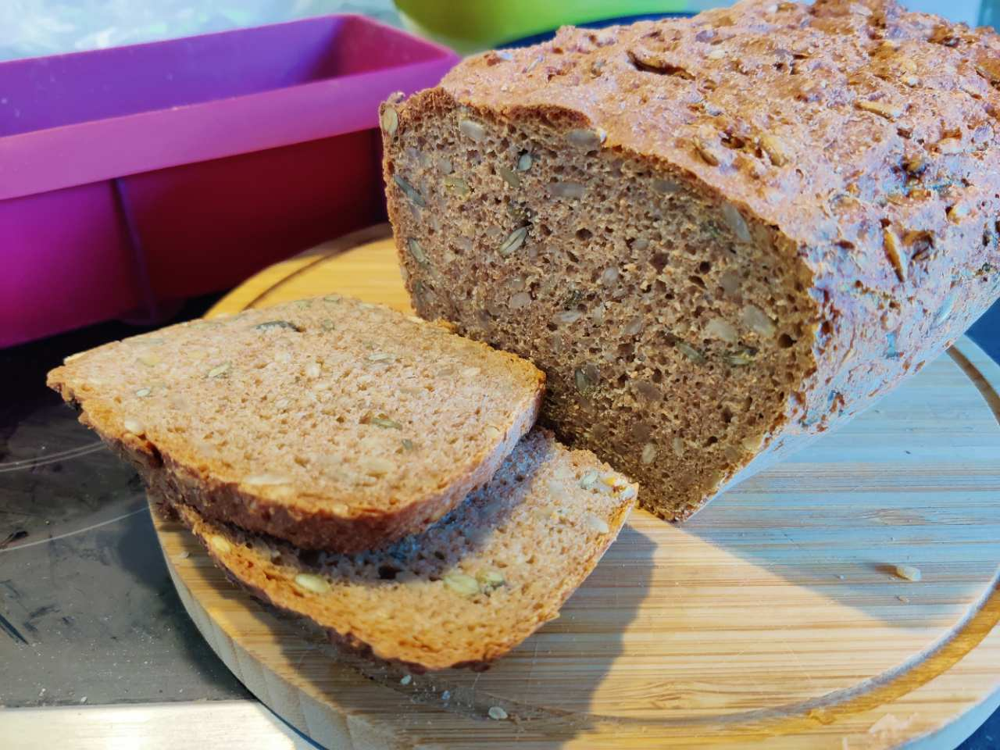

Roggenvollkornbrot mit Sonnenblumenkernen
Saftiges Roggenvollkornbrot mit Sonnenblumenkernen – ein einfaches Hefebrot aus der Kastenform.

Zutaten
- 450 ml Wasser (warm)
- 1 TL Zucker
- 21 g frische Hefe (½ Würfel)
- 2 TL Salz
- 1–2 EL Essig
- 150 g Sonnenblumenkerne
- 500 g Roggenvollkornmehl
Zubereitung
Zuerst das warme Wasser in eine Schüssel gießen und den Zucker dazugeben.
Dann die Hefe hineinbröckeln und verrühren, bis sie sich aufgelöst hat.
3 gehäufte EL Mehl dazugeben und verrühren.
Mit einem Tuch abdecken und 10 Minuten gehen lassen.
Danach das Salz, den Essig, die Sonnenblumenkerne und das restliche Mehl hinzufügen.
Mit einem Handrührer oder einer Küchenmaschine gut durchkneten.
Den Teig nun in eine eingefettete Kastenform füllen.
Die Backform mit einem Tuch abdecken und noch einmal 40 Minuten gehen lassen.
Im vorgeheizten Ofen etwa 60 Minuten bei 200 °C Ober- und Unterhitze backen.
Das Brot auskühlen lassen und genießen.